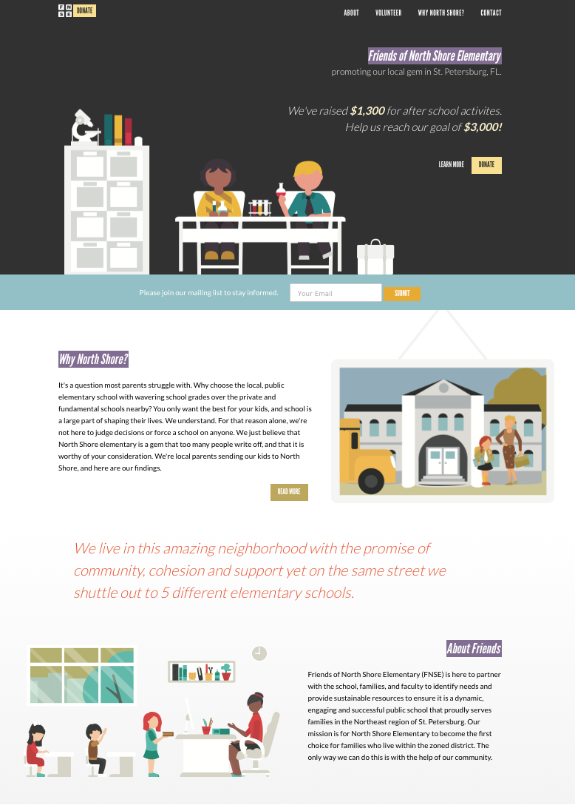

A Lot Changes in Five Years
Sun, Apr 29, 2018I recently offered to create a website for a local charity, and then it hit me – I haven’t made a website in five years. Sure, I made this site and got on the decentralized bandwagon, but I haven’t done something from scratch in some time. Especially on the design and responsive front. Now that I’m finished, I thought it may be useful to share my notes.

Responsive Sucks
For a second, I was so happy because everything seems to be supported by every browser. The days of old IE testing are over. The holy grail has been obtained. Wrong. Instead, every annoyance with browser testing has now been transferred one-to-one with an annoyance of responsive design.
I dipped my feet into the responsive design pool with a simple task in mind – build a hamburger menu. This is great starting point since it mainly applies to portrait mobile and anything larger than that. Here is the end result (resize your browser to see).
This pen by Brad Frost helped me navigate the waters. I was happy with how the implementation went until I realized that every single design decision will have to be combed over and designed for 4+ screen sizes. Ugh. Then, some devices have specific considerations. Double Ugh.
I took this approach to manage CSS breakpoints with a Sass mixin. I now see the date of 2012 on that article. Where has the time gone? Anyway, so far it’s still working fine. Is there a better solution now?
Codepen Helps
Fortunately, with all of this CSS/responsive nonsense, Codepen is a huge help. I wasn’t uncommon for me to have 3 pens open at any given time while working through issues. But an unexpected benefit was in creating my own pens. It forced me to clean up the code before “publishing” it.
Cleaning up the code naturally made we want to set up Sass. Before I knew it, I had files for typography, forms, constants, layout along with section specific CSS. I mention that to point out that just doing one simple task slowly, methodically, and correctly sets the stage for a better project.
Codekit Still Does The Job (JQuery Too!)
Since I’m jumping into new tools, I figured Webpack was the next obvious target. 15 minutes into their docs and I decided that this project would focus on HTML & CSS. A Webpack project can come later. Too much complexity for now.
So, I resorted to my old staples: Codekit and JQuery. Fortunately, both are still alive and kicking. I had no problem integrating Codekit into my Hugo workflow, and JQuery still works as expected.
Another oldie but goodie: Google Fonts.
Scrolling is Easier
Scrolling used to be a constant battle. Fixing elements at random positions to the top of the browser on scroll. Detecting page events on scroll. Scrolling to a section on click. It’s all the same stuff. It just feels so much easier now.
As an example, reference this CSS Tricks article on scroll-then-fix content. they have a catch all solution, but for non critical elements that are fine working in most browsers, it is even easier. Simply use position fixed on mobile to stick something at the top, and position sticky on everything else to scroll-then-fix at your desired position.
Likewise, smooth scrolling just feels better now. I used this plugin (look at that, another CSS Tricks link). Everything performs smoother than expected. I remember when all of this was so glitchy, so it’s a welcome change.
Flexbox Rocks & Doesn’t
OK, it mostly does. Some cool things it allows:
- You can change the order of the children inside of the Flexbox with one line of CSS. This means you could have something like a newsletter form which can easily appear at the top on one page and down by the footer in another.
- Switch from row to column layout, which makes designing for smaller screens much easier. Place them in row when you have the room, stack them on top of one another in column for smaller screens.
- Minimize div soup.
And a bunch of other cool stuff. I decided not to get into CSS Grid with this project. Next time. Until then, read this article on the differences between the two.
Really, the only annoyance I had was in scaling images. Turns out, img tags won’t autoscale in a Flexbox unless they are in a figure tag. Read more.
Animation is a Thing
Subtle animation is everywhere. Look at my hamburger menu above. The hamburger turns into a cross thanks to this pen by Matthew Blode. To take it a step further, most sites now have the concept of animating when something comes into the viewport.
This Stack Overflow answer produced this function which does the trick.
;(function($, win) {
$.fn.inViewport = function(cb) {
return this.each(function(i,el){
function visPx(){
var H = $(this).height(),
r = el.getBoundingClientRect(), t=r.top, b=r.bottom;
return cb.call(el, Math.max(0, t>0? H-t : (b<H?b:H)));
} visPx();
$(win).on("resize scroll", visPx);
});
};
}(jQuery, window));
With that, I just added a className of triggerMe on anything I wanted to be notified when it came into view. At that point, the JS would recognize it with this code:
$(".triggerMe").inViewport(function(px){
if(px) $(this).addClass("triggeredCSS3") ;
});
Finally, triggeredCSS3 is added to the element, and any styles can be applied to make an element appear like it animates in on view.
Tons of Stuff & Things
I was a bit surprised to see the ridiculous amount of projects and buzzwords. Compass, Bourbon, Neat, Suzy, 20 other Sass mixins, Gulp, npm, Webpack, Angular, React, Vue, Foundation, Grunt, Hover, Animate, PhotoSwipe and on and on and on. Each aspect of web development has an array of specialized tools. It is a bit overwhelming, which is probably why I gravitated towards things I knew. I couldn’t find a consensus starter pack of tools, so I still am unsure of which ones are worth spending time on.
That about sums it up for now. The core concepts are all familiar, and layers have been added on top. Figuring out which layers have lasting power is the tricky part. I’ll probably throw together another site with slightly different tools for research. Them, on to the new JavaScript world.